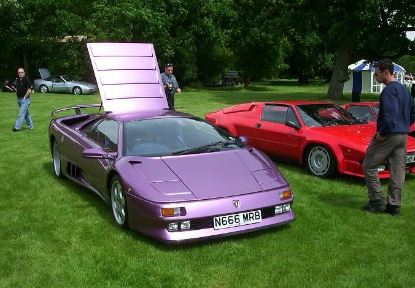
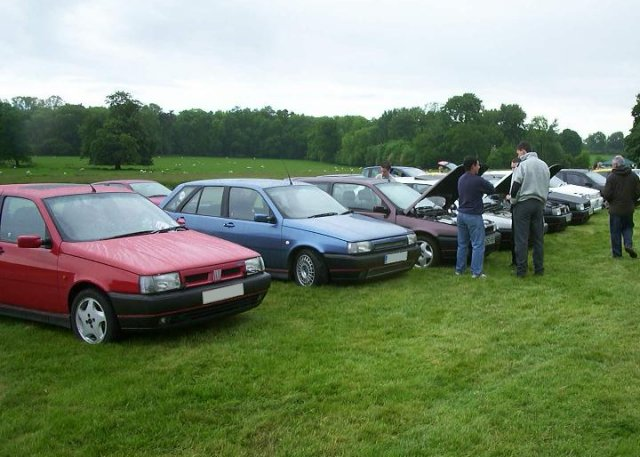
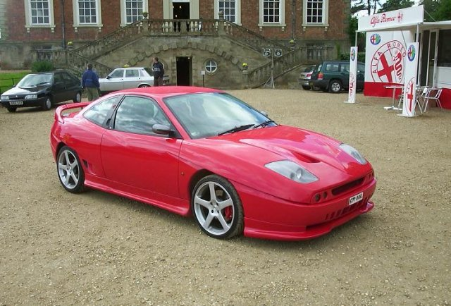

Only one meeting point en-route was chosen to keep things simple. This was the Newport Pagnel Service station near to Milton Keynes on the M1. This was also the meeting point for a bunch of Fiat Coupe drivers which in theory would make a more interesting convoy up the M1. Various cars arrived between 9:30am and 10:30am. We had about 6 Tipos, 6 Coupes, a Fiat Uno Turbo, a Alfa 155, my Seat Ibiza and a Lancia Thema Turbo. On cue an AA breakdown van arrived and I went over to talk to the driver. He was going to try and follow us to the event to sign up some new members!
Unfortunately when it came time to leave the service station people at the head of the convoy sped off without waiting for everyone else to join the motorway and catch up. The coupe group disappeared off into the distance, followed by the Tipos, then Nareman in his Alfa 155, George in his Thema and me at the tail in the Ibiza. Off the motorway George and Nareman stopped to wait for me to catch up as they did not know the way. The three of us went past a junction and saw the other Tipo owners we had lost going the opposite way. I noticed the sign at the junction which indicated that they were going the correct way. We turned around at the next roundabout only to see the other Tipo owners, who had also turned around, coming the other way again. We pulled over and waited for them. Apparently they thought that they must have been going the wrong way and turned around to follow us!! It was quite comical and actually turned out for the best as I ended up guiding everyone in a convoy (at last) through about 10 miles of country roads to the event.

Alexis showed off his debadged grill and Ian his Seat Ibiza front splitter derived rear skirt. Antz handed out some bits from his car including a strut brace for Alexis. The photographer from AutoItalia almost took a picture of Alexis' car until Alexis pointed out that the strut brace was only resting on the suspension turrents to see what it would look like. You have to feel for Antz having recently crashed his car. He had to leave early after seeing all our Tipos but with a newly found drive to get his own Tipo back on the road.

I met up with Garinder Notta who I had been in contact with via the forum. His friend has transplanted a 2.5 litre V6 engine out of an Alfa 156 into his Alfa 145 Cloverleaf (same floorpan as Tipo). The conversion looked very professionally done and quite a tight fit! Ideally he would have liked to have fitted the 3.0 litre engine but the 2.5 litre donor engine was found first. They had been able to get around the keycode immbolizer system fitted to the ECU although, I presume for security reasons, they did not want to tell me how. The exhaust note was intoxicating although the engine was not running perfectly. They have a problem with the ECU which uses the ABS sensors to detect wheel spin and switches off one of the injectors to limit the power.
George Roberts turned up in a Lancia Thema 2.0 Turbo. The car was immaculate. Bodywork in perfect condition, alloys had been refurbished and the cream leather interior had been retrimmed. It was for sale at £4250 but not really my type and a bit too heavy. George said he was very impressed with the performance and the car was probably a good indication of what our Turbo conversions would end up like.
Auto Delta had a large display with many bodykitted and turbo converted cars. The turbo conversions looked very tidy and gave the cars awesome performance. They had some 4 pot Brembo calipers fitted to a Fiat Barchetta. I was dissapointed to find out that they would not fit on a Tipo only on a Punto. They also had an artists impression of their interpretation of what the new Alfa 147 would look like which was lush.
Ian Cull was nominated for luckiest Tipo owner of the day. This was due to managing to talk a Fiat Coupe owner into giving him his old 4 spoke 16" titanium coloured alloy wheels for free.

There was a lovely Masserati 3200 GT and I can now understand why Nareman loves them so much. This one looked amazing although it did include several thousand pounds worth of extras including same huge 19" alloy wheels. Yours for a cool £69000.
There were a group of old but intimidating De Tomaso cars. These cars were powered by a 5.8 Ford V8 exiting through four ANSA exhausts which sounded awesome. One was in mint condition. It looked like it had just been built and then cleaned!! I talked to the owner of the another one that was used daily. 12mpg but it could put power down without any drama. He was really annoyed with the owner of the mint condition one picking on things such as the lights being the wrong shape, painted in metallic paint not a base colour and the period radio for show and not connected etc.
The end of the day saw most owners giving their cars some stick up the driveway leading to the hall.